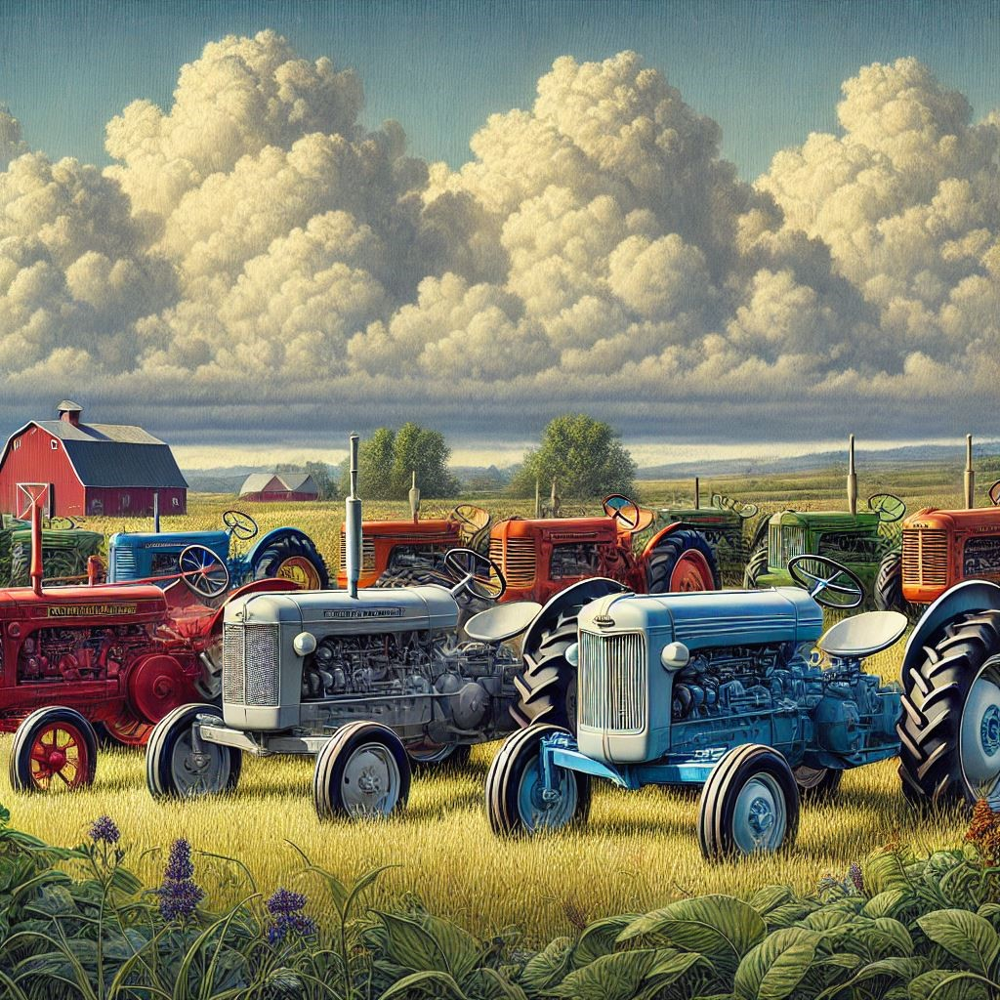

Welkom bij de Deftingse Oldtimer Vrienden
Ontdek de schoonheid en geschiedenis van oldtimer landbouwtractoren. Deze machines zijn niet alleen gereedschappen, maar een bewijs van het agrarische erfgoed en de innovatie uit het verleden. Met dit initiatief willen we sympathisanten voor deze fascinerende hobby samenbrengen.
